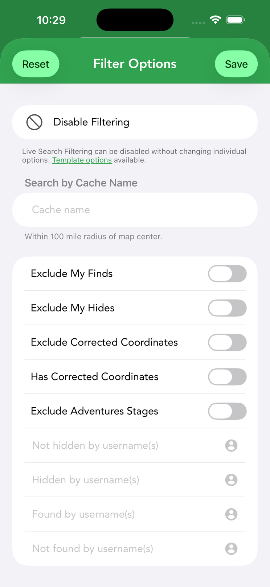
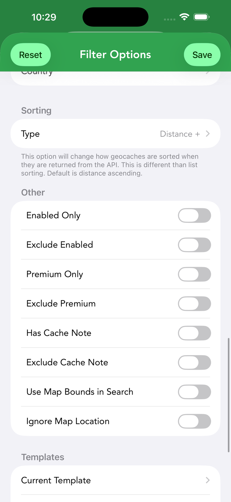
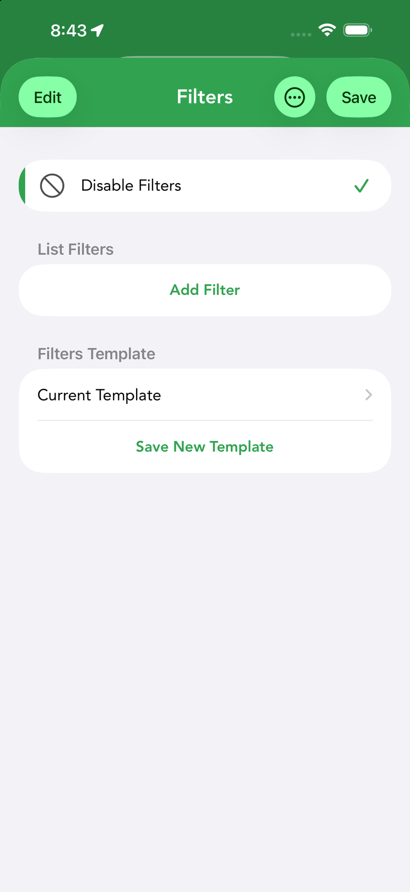
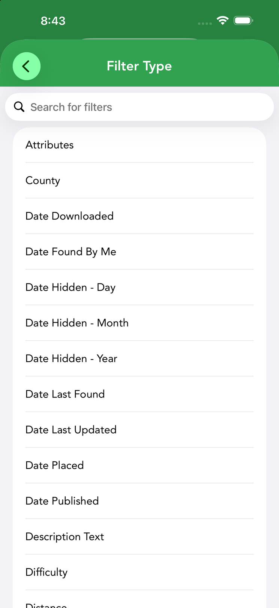
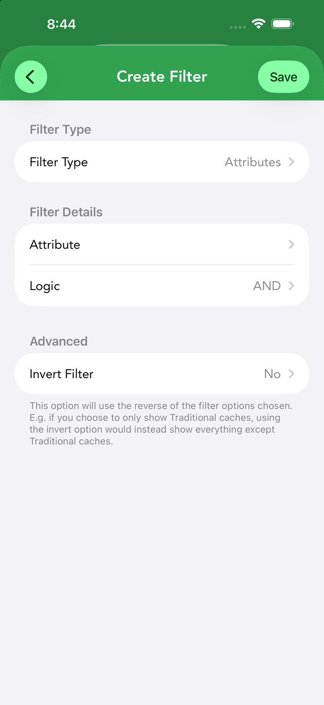
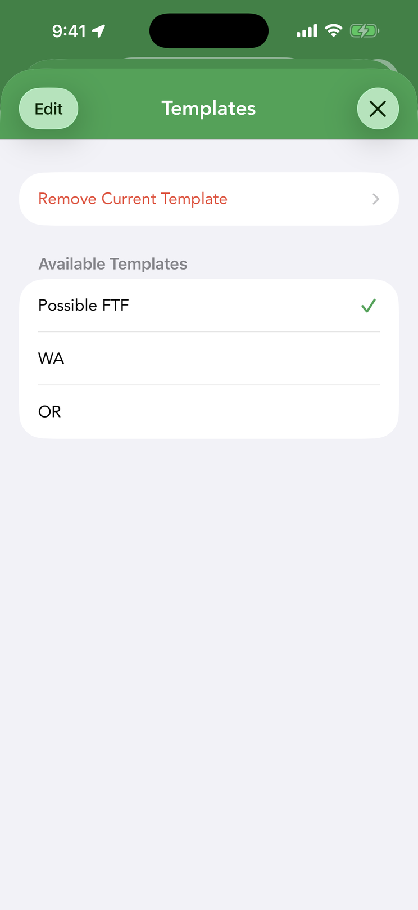
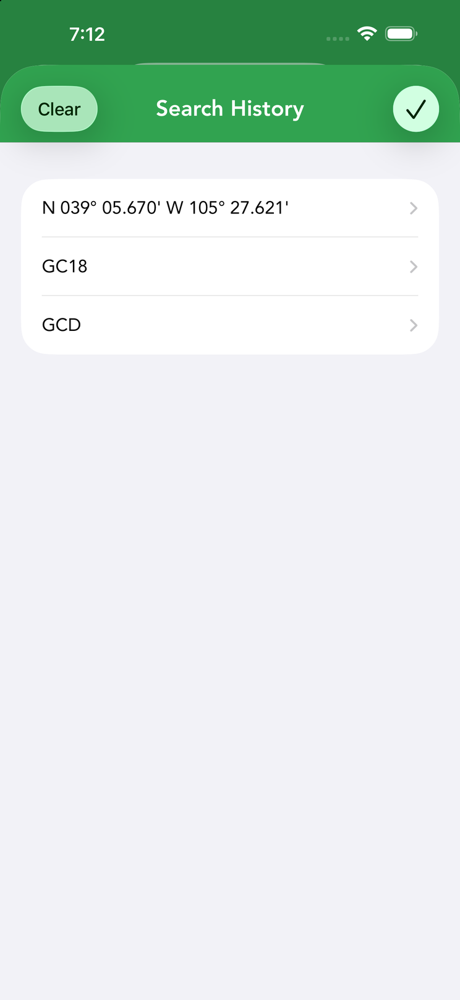

Search & Filters
Cachly’s search and filtering tools let you zero in on exactly the caches you want — by difficulty, terrain, type, attributes and location — and save those criteria for reuse.






Live search & filter options
The search field on the Live tab accepts a location, GC codes or coordinates, and the clock icon beside it re-runs a recent search (see search history). Results can be shown on the map or as a list, sorted (see below), and saved to a list or offline set.
Tapping the filter button on the Live tab opens Live Search Filtering, which refines what the geocaching.com API returns. Live filtering is off by default — until you turn it on, the API returns unfiltered results. At the top, a Disable Filtering master toggle switches the whole system on or off without changing your individual options — handy for a quick unfiltered look. The options:
- Search by Cache Name — find caches by name within a 100-mile (160 km) radius of the map center.
- Exclusions — checkboxes for Exclude My Finds, Exclude My Hides, Exclude Corrected Coordinates, Has Corrected Coordinates and Exclude Adventures Stages.
- Usernames — hidden by / not hidden by / found by / not found by specific username(s).
- Cache types & attributes — limit results to particular cache types, container sizes and attributes.
- Difficulty and Terrain — range sliders from 1.0 to 5.0.
- Search Radius — how far from the search point to look.
- Favorites Minimum — only caches with at least this many favorite points.
- Cache Placed Date and Cache Published Date — start and end date ranges. The Cache Published range is limited to a 30-day span.
- Sorting — how the API returns results (Cache Name, Difficulty, Distance, Favorites, Found Date, Placed Date, Size or Terrain, ascending or descending; the default is distance ascending). This is separate from list sorting.
- Other — Enabled Only, Exclude Enabled, Premium Only, Exclude Premium, Has Cache Note, Exclude Cache Note, Use Map Bounds in Search (limit results to the visible screen area) and Ignore Map Location.
- Limit to State, Province or Country — restrict results geographically with the States/Provinces and Country pickers.
A Templates section at the bottom shows the Current Template and offers Save New Template — a search template saves the entire filter configuration above so you can reapply it in one tap (see templates). The Reset button returns everything to defaults.
Filtering
Where search fetches caches, filtering narrows what you’re already looking at — live map results, a list, or an offline set. Filters apply in real time, and the filter icon shows solid when constraints are active. Live search filtering (above) and offline list filters are two separate systems with their own options and templates.
How offline filters match
Offline filtering is far more extensive than live search. Each filter belongs to a kind that sets how you configure it and how a cache is matched:
| Kind | How it matches |
|---|---|
| Text | A text field with a matching mode: Contains, Begins with, Ends with, Matches (Regex), or Contains Multiple. |
| Number | A numeric comparison (less than, less than or equal to, greater than, greater than or equal to, equal to, not equal to — or a range). Difficulty and Terrain accept decimals. |
| Multi-select | Pick one or more values; a cache passes if it matches any selected value. |
| Yes / No | A true/false condition (e.g. is archived, has images). |
| Date | Match against a date, such as when the cache was placed, found or downloaded. |
| List | Membership in one or more other offline lists. |
Most filters can also be inverted (match the opposite), and you can combine as many as you like.
Offline list filters
Offline lists have their own stacked-filter system, separate from live search filtering. In an offline list’s list view, tap the filter button to open it. At the top, a Disable Filters toggle switches all filtering off without losing your setup; below it, List Filters holds the filters themselves and Filters Template saves and reloads whole filter sets (see templates).
Tap Add Filter to create a filter:
- Filter Type — choose from the (searchable) list of filter types below.
- Filter Details — the type-specific options. For example, an Attributes filter lets you pick attributes and set the Logic to AND or OR; a text filter takes a search term and matching mode; a number filter takes a comparison.
- Advanced › Invert Filter — uses the reverse of the options chosen: if you filter to show only Traditional caches, inverting instead shows everything except Traditional caches.
Filters stack — add as many as you like and they apply together, so you can build queries like “Traditional caches, D/T under 3, with favorite points, not found by me”.
The complete set of filter types:
| Filter | Kind | Matches |
|---|---|---|
| Name Text | Text | The cache name. |
| GC Code Text | Text | The GC code. |
| Owner Text | Text | The cache owner’s name. |
| Placed By Text | Text | The “placed by” name. |
| Description Text | Text | Text within the listing description. |
| Hint Text | Text | Text within the hint. |
| Log Text | Text | Text within stored logs. |
| Personal Note Text | Text | Text within your personal note. |
| Image Text | Text | Text in image captions/descriptions. |
| Found By Username | Text | A specific finder’s username. |
| Location – Country Text | Text | The cache’s country. |
| Location – State Text | Text | The cache’s state/province. |
| County | Text | The cache’s county. |
| Difficulty | Number | Difficulty rating (decimal). |
| Terrain | Number | Terrain rating (decimal). |
| Favorite Count | Number | Number of favorite points. |
| Favorite Percentage | Number | Favorite-point percentage. |
| Distance | Number | Distance from you. |
| Find Count | Number | Total times the cache has been found. |
| Size | Multi-select | Container size(s). |
| Type | Multi-select | Cache type(s). |
| Log Type | Multi-select | Log type(s) on the cache. |
| Highlight Color | Multi-select | Highlight color(s). |
| Attributes | Multi-select | Specific cache attribute(s), with AND/OR logic. |
| Date Placed | Date | When the cache was placed. |
| Date Published | Date | When the cache was published. |
| Date Found By Me | Date | When you found it. |
| Date Last Found | Date | When it was most recently found. |
| Date Downloaded | Date | When you downloaded it offline. |
| Date Last Updated | Date | When its data was last refreshed. |
| Date Hidden – Year / Month / Day | Date | The hidden date by year, month or day. |
| Is Archived | Yes/No | Cache is archived. |
| Is Available | Yes/No | Cache is active/available. |
| Is Premium | Yes/No | Premium-member-only cache. |
| Is Highlighted | Yes/No | Has any highlight color. |
| Is Found By Me | Yes/No | You’ve found it. |
| Is DNF By Me | Yes/No | You’ve logged a DNF. |
| DNFs in Last Logs | Yes/No | The cache’s most recent stored logs include a run of DNFs — you choose how many DNFs to look for in how many recent logs (up to 25 each; the default is 5 DNFs in the last 5 logs). Only logs stored offline are checked, matching what you see on the cache’s logs screen. |
| Is Event Ended | Yes/No | The event’s end date has passed. Set it to No (or invert it) to hide past events from a list. Events without a stored end date — such as some GPX imports — are never considered ended. |
| Is Owned By Me | Yes/No | You own (hid) it. |
| Is Favorite | Yes/No | You awarded it a favorite point. |
| Is Lonely | Yes/No | Not found in a long time. |
| Is Created Offline | Yes/No | A cache you created locally in Cachly. |
| Is FTF Available PREMIUM | Yes/No | No found logs yet (first-to-find); shown for geocaching.com Premium members. |
| Has Corrected Coordinates | Yes/No | Has corrected coordinates set. |
| Has Trackables | Yes/No | Currently holds trackables. |
| Has Personal Note | Yes/No | Has a personal note. |
| Has Images | Yes/No | Has images. |
| Has Personal Note Images | Yes/No | Has photos attached to a personal note. |
| Has Waypoints | Yes/No | Has waypoints. |
| Has Attributes | Yes/No | Has any attributes. |
| Has Logs | Yes/No | Has stored logs. |
| Has Description | Yes/No | Has a description. |
| Has Hint | Yes/No | Has a hint. |
| Has Solution Checker | Yes/No | Has a geocaching.com solution checker. |
| In Other List | Yes/No | Belongs to another offline list. |
| In Selected Lists | List | Belongs to specific offline lists you choose. |
Filter & search templates
Both filtering systems let you save your configuration as a reusable template and apply or clear it in one tap — no reconfiguring each time. In each case the Templates section shows the Current Template (tap to load a saved one) and Save New Template (name and save the current setup). The two kinds are separate, and they behave differently when it comes to syncing:
- Live search templates — save the entire Live Search Filtering configuration; synced via iCloud across your devices (both iCloud and iCloud Drive must be enabled).
- Offline list filter templates — save a stacked filter set that can be applied to any offline list; stored locally on the device only, so they won’t appear on your other devices.
Highlights
Highlighting marks caches with color — from the cache details, the Live tab, offline map lists and long-press menus. There are 20 colors — the color shows as a bar down the side of the Cache Details screen, on the left edge of the row in List View, and on the cache pin on the map — and you can rename the color labels to suit your workflow (e.g. “challenge candidates”, “revisit”). Apply a highlight from the Cache Details screen, the Live tab, offline maps, a long-press on a List View row, or a long-press on a map callout. Highlights are stored in iCloud, so a deleted cache keeps its highlight when reloaded; if devices get out of sync, use Settings › Highlighting › Manually Sync Highlights.
Sorting
The sort button (up/down arrows) in any cache list — live results or an offline list — opens a sort sheet: choose a Direction (Ascending or Descending), then a Sort Type: Date Found, Date Last Found, Date Placed, Difficulty, Distance, FTF, Favorite Count, Favorite Percentage, Found, GC Code, Highlight Color, name, size, premium status, trackable count and more. Trackables have their own sort options too. This local sorting is separate from the live filter’s API Sorting option, which controls the order caches come back from geocaching.com.
Cache actions (long-press)
Long-press a cache in any list or search result for a quick-action menu (with a preview of the cache):
- Edit Highlight / Remove Highlight — set or clear its color.
- Add to List — add it to an offline or online list.
- Watch / Ignore — add to your geocaching.com watch or ignore list.
- Navigate to Cache and Show on Map.
- Copy Cache Code / Copy Coordinates.
- Delete — remove it (offline caches).
Search history

Cachly remembers recent searches so you can re-run one without rebuilding it — tap the clock icon next to the Live tab’s search field to pick from your history, or clear it from the same screen.